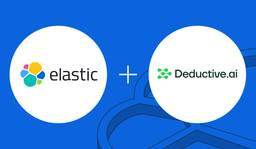

Elastic Blog - Elasticsearch, Kibana, and ELK Stack
https://www.elastic.co
Power insights and outcomes with The Elasticsearch Platform. See into your data and find answers that matter with enterprise solutions designed to help you accelerate time to insight. Try Elastic toda...
フィード

Crafting a hybrid geospatial RAG application with Elastic and Amazon Bedrock
Elastic Blog - Elasticsearch, Kibana, and ELK Stack
This blog explores how to build a powerful retrieval augmented generation (RAG) system that incorporates geospatial data using Elasticsearch, Amazon Bedrock, and LangChain.
2年前
How Elastic AI Assistant for Security and Amazon Bedrock can empower security analysts for enhanced performance
Elastic Blog - Elasticsearch, Kibana, and ELK Stack
The Elastic AI Assistant for Security coupled with Anthropic’s Claude model via Amazon Bedrock can elevate a security team’s posture and eliminate mundane tasks.
2年前
Generative AI using Elastic and Amazon SageMaker JumpStart
Elastic Blog - Elasticsearch, Kibana, and ELK Stack
Learn how to build a GAI solution by exploring Amazon SageMaker JumpStart, Elastic, and Hugging Face open source LLMs using the sample implementation provided in this post and a data set relevant to your business.
3年前
In search of a cluster health diagnosis: Introducing the Elasticsearch Health API
Elastic Blog - Elasticsearch, Kibana, and ELK Stack
Is my Elasticsearch cluster healthy? How do I repair it? These are difficult questions to answer, but as part of Elasticsearch 8.7, we are releasing a new Health API to help identify and fix problems in Elasticsearch clusters.
3年前
Elasticsearch MCP server now available on AWS Marketplace
Elastic Blog - Elasticsearch, Kibana, and ELK Stack
Elasticsearch MCP server — available on AWS Marketplace — allows seamless integration with Elasticsearch data using the Model Context Protocol. You can connect directly from any MCP-compatible client to query and interact with Elasticsearch indices.
1年前
Elastic and Google Cloud: Enhancing security analytics from data ingestion to incident response
Elastic Blog - Elasticsearch, Kibana, and ELK Stack
Elastic and Google Cloud are pioneering a comprehensive security solution that leverages their distinct capabilities to offer an unparalleled security analytics experience.
2年前
How to build comprehensive customer financial profiles with Elastic Cloud and Google Cloud
Elastic Blog - Elasticsearch, Kibana, and ELK Stack
Financial institutions have vast amounts of data about their customers, but many of them struggle to use that data to their advantage. Elastic and Google Cloud enable institutions to manage this information effectively.
3年前
Safely sample production data into pre-production environments with Logstash
Elastic Blog - Elasticsearch, Kibana, and ELK Stack
Learn how to use Logstash to safely route a subset of production data to pre-production clusters by using efficient sampling techniques and by leveraging the UDP protocol’s fire-and-forget functionality.
2年前
Encryption at rest in Elastic Cloud: Bring your own key with Google Cloud
Elastic Blog - Elasticsearch, Kibana, and ELK Stack
Follow the step-by-step process of configuring encryption at rest in Elastic Cloud using Google Cloud Key Management Service.
2年前
Secure your Elastic Cloud account with multifactor authentication (MFA)
Elastic Blog - Elasticsearch, Kibana, and ELK Stack
Elastic Cloud now supports enhanced multifactor authentication (MFA) to protect user accounts and data. Learn about the importance of MFA for your organization and how to implement your MFA setup.
2年前
Encryption at rest in Elastic Cloud: Bring your own key with Azure Key Vault
Elastic Blog - Elasticsearch, Kibana, and ELK Stack
Follow this step-by-step process to implement encryption at rest with Azure Key Vault keys and Elastic Cloud deployments to create a secure and compliant environment for your sensitive data.
2年前
Encryption at rest in Elastic Cloud: Bring your own key with AWS KMS
Elastic Blog - Elasticsearch, Kibana, and ELK Stack
Follow the step-by-step process of configuring encryption at rest in Elastic Cloud using AWS Key Management Service (KMS).
2年前
Elastic Platform 8.14: ES|QL GA, encryption at rest, and vector search optimizations
Elastic Blog - Elasticsearch, Kibana, and ELK Stack
Elastic Platform 8.14 includes ES|QL GA, the use of AI for pattern recognition in logs, API key based security model for remote clusters, encryption at rest with KMS keys, retrievers, several vector optimizations, and vector quantization by default.
2年前
Elastic and Cursor partner to accelerate context engineering with coding agents
Elastic Blog - Elasticsearch, Kibana, and ELK Stack
Elastic and Cursor partner to bring Elasticsearch's retrieval, tools, and memory into Cursor's coding agents, giving developers a context engineering foundation that keeps AI grounded in their own data.
3ヶ月前
Elastic’s new metrics capabilities will dramatically improve uptime for public sector IT
Elastic Blog - Elasticsearch, Kibana, and ELK Stack
The new columnar metrics engine in Elastic Observability enables public sector IT teams to combine logging, metrics, and traces in one platform. As a result, SREs can improve uptime while protecting taxpayer dollars in the process.
2日前

Elastic and Deductive AI join forces to accelerate agentic incident investigation for engineering teams
Elastic Blog - Elasticsearch, Kibana, and ELK Stack
Today, Elastic announced that it has entered into an agreement to acquire Deductive AI, an AI-powered investigation platform that helps engineering teams identify and resolve production issues faster.
3日前
Elastic Stack 9.4.3 released
Elastic Blog - Elasticsearch, Kibana, and ELK Stack
Version 9.4.3 of the Elastic Stack was released today. We recommend you upgrade to this latest version. We recommend 9.4.3 over the previous versions 9.4.2For details of the issues that have been fixed and a full list of changes for each product in this version, please refer to the release notes.
4日前
Elastic Stack 9.4.4 released
Elastic Blog - Elasticsearch, Kibana, and ELK Stack
Version 9.4.4 of the Elastic Stack was released today. We recommend you upgrade to this latest version. We recommend 9.4.4 over the previous versions 9.4.3For details of the issues that have been fixed and a full list of changes for each product in this version, please refer to the release notes.
4日前
Elastic Stack 9.3.8 released
Elastic Blog - Elasticsearch, Kibana, and ELK Stack
Version 9.3.8 of the Elastic Stack was released today. We recommend you upgrade to this latest version. We recommend 9.3.8 over the previous versions 9.3.7For details of the issues that have been fixed and a full list of changes for each product in this version, please refer to the release notes.
4日前
Elastic Stack 8.19.19 released
Elastic Blog - Elasticsearch, Kibana, and ELK Stack
Version 8.19.19 of the Elastic Stack was released today. We recommend you upgrade to this latest version. We recommend 8.19.19 over the previous version 8.19.18For details of the issues that have been fixed and a full list of changes for each product in this version, please refer to the release notes.
4日前
Elastic Stack 9.3.7 released
Elastic Blog - Elasticsearch, Kibana, and ELK Stack
Version 9.3.7 of the Elastic Stack was released today. We recommend you upgrade to this latest version. We recommend 9.3.7 over the previous versions 9.3.6For details of the issues that have been fixed and a full list of changes for each product in this version, please refer to the release notes.
25日前
Elastic Stack 8.19.18 released
Elastic Blog - Elasticsearch, Kibana, and ELK Stack
Version 8.19.18 of the Elastic Stack was released today. We recommend you upgrade to this latest version. We recommend 8.19.18 over the previous versions 8.19.17For details of the issues that have been fixed and a full list of changes for each product in this version, please refer to the release notes.
25日前
Elastic Stack 9.3.6 released
Elastic Blog - Elasticsearch, Kibana, and ELK Stack
Version 9.3.6 of the Elastic Stack was released today. We recommend you upgrade to this latest version. We recommend 9.3.6 over the previous versions 9.3.5For details of the issues that have been fixed and a full list of changes for each product in this version, please refer to the release notes.
1ヶ月前
Elastic Stack 8.19.17 released
Elastic Blog - Elasticsearch, Kibana, and ELK Stack
Version 8.19.17 of the Elastic Stack was released today. We recommend you upgrade to this latest version. We recommend 8.19.17 over the previous version 8.19.16For details of the issues that have been fixed and a full list of changes for each product in this version, please refer to the release notes.
1ヶ月前
Higher education analytics for the ultra-intelligent university
Elastic Blog - Elasticsearch, Kibana, and ELK Stack
Learn how higher education analytics and a unified data platform help institutions break down silos and build a smarter, AI-ready university.
4日前
Elastic and Axonius integrate to deliver unified asset intelligence for security teams
Elastic Blog - Elasticsearch, Kibana, and ELK Stack
The Axonius integration brings normalized asset context into Elastic, so analysts can search, correlate, and investigate Axonius data alongside endpoint alerts, network telemetry, identity events, and the rest of your Elastic Security data.
9日前
Elastic’s guide to AI in the interview process
Elastic Blog - Elasticsearch, Kibana, and ELK Stack
As the Search AI Company, we understand the value of AI. We use it. We build with it. We believe in its power to augment human potential. But when you’re applying to join Elastic, we’re searching for you.
9日前
Elastic named a Leader in the 2026 Gartner® Magic Quadrant™ for Observability Platforms
Elastic Blog - Elasticsearch, Kibana, and ELK Stack
Elastic was named a Leader in the Gartner® Magic Quadrant™ for Observability Platforms. In our opinion, Elastic Observability helps teams investigate faster with agentic AI with full context and reduces costs with efficient metrics and logs storage.
10日前
Elastic achieves the AWS AI Security Distinction, securing AI-specific risks
Elastic Blog - Elasticsearch, Kibana, and ELK Stack
Elastic has achieved the AWS AI Security Distinction, awarded to partners with tech depth and real customer outcomes in AI and security. Elastic Security includes an AI agent, Elastic Workflows, LLM security detections, and agentic SOC capabilities.
9日前
Elastic leads the latest AV-Comparatives Malware Protection Test with a perfect score
Elastic Blog - Elasticsearch, Kibana, and ELK Stack
AV-Comparatives published the 2026 Business Security Test, covering the March–June 2026 test period. Across 16 enterprise solutions tested on fully patched Windows 11, Elastic Security was the only vendor to achieve a 100% malware protection rate.
10日前
Universities do more with less — start with data
Elastic Blog - Elasticsearch, Kibana, and ELK Stack
Higher education digital transformation starts with unified data, not more tools. Learn how to reduce costs, strengthen security, and scale.
11日前
Space is now critical infrastructure, but we're not securing it like it is
Elastic Blog - Elasticsearch, Kibana, and ELK Stack
Space is the newest critical infrastructure domain, and while the adversaries already understand that, the defenders are catching up. Here's how Elastic can help.
11日前
The future of governing AI agents
Elastic Blog - Elasticsearch, Kibana, and ELK Stack
Autonomous security agents need governance built into the architecture across reasoning separation, continuous evaluation, progressive trust, and agent-specific telemetry at scale.
17日前
The rise of intelligent banking: Unifying fraud, security, and compliance in the era of AI
Elastic Blog - Elasticsearch, Kibana, and ELK Stack
Banks face growing threats and rising expectations. Discover how unifying observability, security, and fraud prevention enables smarter decisions and stronger defenses.
1年前
Shifting AI from activity to outcomes in the year ahead
Elastic Blog - Elasticsearch, Kibana, and ELK Stack
New Elastic research reveals why many Australian businesses exceeded their AI budgets last year: it's a data foundation problem. Discover how to shift focus from tokenmaxxing to real business ROI and proper governance.
19日前
Q&A: How Elastic and Anyshift are bringing AI-powered context to incident response
Elastic Blog - Elasticsearch, Kibana, and ELK Stack
Through a new integration with Elastic, Anyshift’s AI agent, Annie, can read from a customer’s Elasticsearch deployment to search logs, surface error and warning spikes, and correlate log evidence with infrastructure change history. Read the blog.
19日前
Seeing what others miss: A conversation with Gigamon COO Gareth Maclachlan
Elastic Blog - Elasticsearch, Kibana, and ELK Stack
Gigamon COO Gareth Maclachlan explains how the Gigamon–Elastic partnership delivers deep observability — enabling faster threat detection, Zero Trust enforcement, and AI traffic governance.
23日前
Elastic named a Leader in the Everest Group Enterprise Search Products PEAK Matrix® Assessment 2026
Elastic Blog - Elasticsearch, Kibana, and ELK Stack
Elastic has been named a Leader in the Everest Group Enterprise Search Products PEAK Matrix® Assessment 2026 and identified as holding the largest market share among all 16 providers evaluated.
24日前
DevRel newsletter — June 2026
Elastic Blog - Elasticsearch, Kibana, and ELK Stack
In the June 2026 DevRel newsletter, we cover jina-embeddings-v5-omni, the latest blogs and videos, and upcoming events.
25日前
Your AI isn’t underperforming. Your data foundation is.
Elastic Blog - Elasticsearch, Kibana, and ELK Stack
New research shows Australian businesses are blowing AI budgets on tokenmaxxing instead of fixing their underlying data foundations. Discover why data quality, not the model, determines your true AI ROI for the new financial year.
1ヶ月前